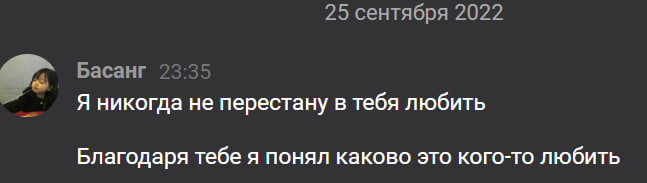
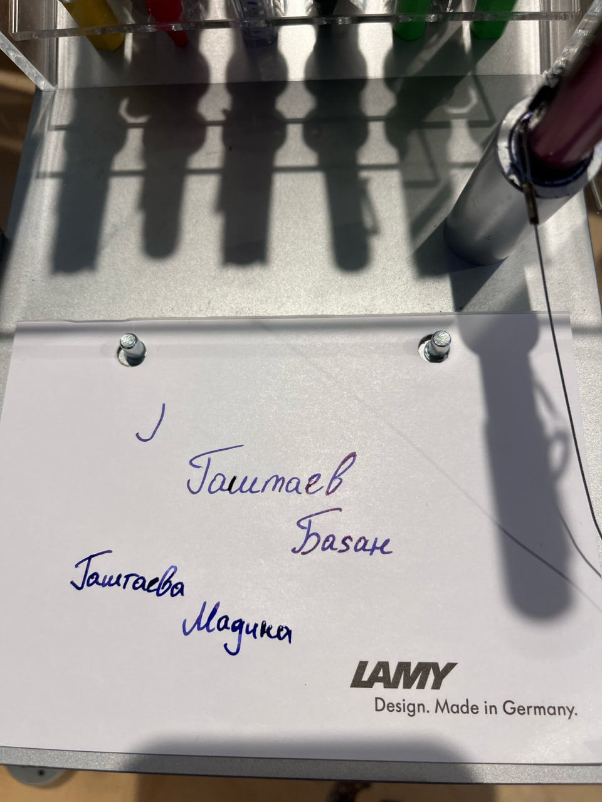
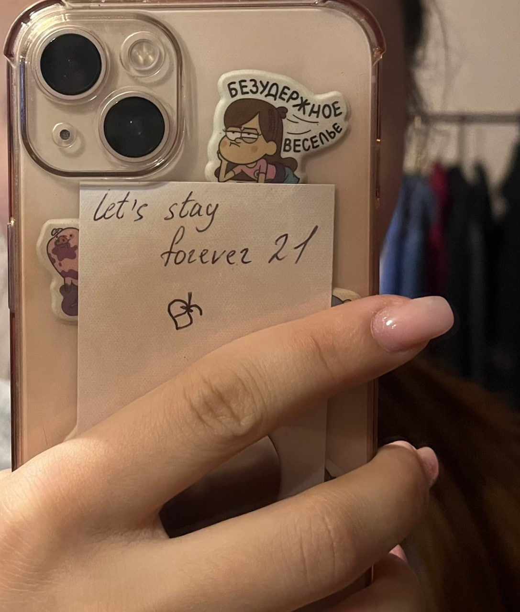
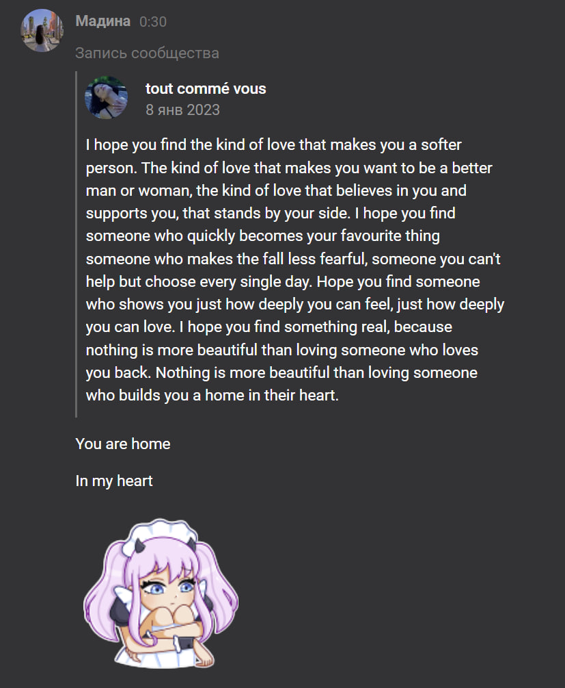

Dandelions
Wishing on dandelions all of the time
Praying to God that one day you'll be mine
Wishing on dandelions all of the time, all of the time
I think that you are the one for me
'Cause it gets so hard to breathe
When you're looking at me, I've never felt so alive and free
When you're looking at me, I've never felt so happy
And I've heard of a love that comes once in a lifetime
And I'm pretty sure that you are that love of mine
С этой песни начались наши отношения. Она самая значимая
Mere Naseeb Mein
"Mere naseeb mein tu hai ke nahi
Tere naseeb mein main hoon ke nahi
Mere naseeb mein tu hai ke nahi
Tere naseeb mein main hoon ke nahi"
Мы с тобой долгое время не разговаривали в мае. Когда ты отправила эту песню, я понял что есть еще шанс вернуть нас.
Spring Day
I miss you
Saying this makes me miss you even more
I miss you
Even though I'm looking at your photo
Time's so cruel, I hate us
Seeing each other is now more difficult
It's all winter here, even in August
My heart is running on time, alone on the Snowpiercer
I want to go to the other side of Earth, holding your hand to put an end to
this winter
How much should my longings fall like snow
Before the days of spring return, friend?
Я не могу перестать слушать твою любимую песню. Она попадает точно в мое настроение.
Айпери Кубик кызы
Айлана жымжырт, караңгы түн ортосу,
Таңдагы шыбырт, калп эле ойготпочу.
Уйку жок неге, сураймын бул эмне?
Сезимдер учат, убакыт токтотпочу.
Алып учат неге, алыстарга мени
Алгалаган сезим шаштырат.
Ак куу болуп учкум келет айдай сулуу кезимде,
Асмандагы жылдыз болуш ал сезимде.
Жылдыз болуп учкум келет жакшынакай кезимде,
Жер жүзүндө адам болуш, ал эсимде.
Шаштырба сезим секелек кезим,
Шашпачы дедиң уксаңчы кебим.
Өзүмдөн өзүм өрт болуп жанам,
Шаркырап аккан шаштырган сезим.
Алып учат неге, алыстарга мени
Алгалаган сезим шаштырат.
Ак куу болуп учкум келет айдай сулуу кезимде,
Асмандагы жылдыз болуш ал сезимде.
Жылдыз болуп учкум келет жакшынакай кезимде,
Жер жүзүндө адам болуш, ал эсимде.
Ты мне очень дорога

In Silence
In silence, no one answers
But I still hear your voice
If you'd only come hold me
If you'd only come
Tears flow
Sorry I'm late again
Let them fall
Sorry I'm late again
In darkness, it's getting hard
Getting hard to stand
If you hear me, if you see me
Won't you come closer?
Tears flow
Sorry I'm late again
Let them fall
Sorry I'm late again
Can you just tell me once
You'll never leave me?
Afraid of losing you
Will you just lay with me?
There will be no fears
Я не хочу тебя терять. Когда я приеду в дубай встреть меня на MG.

BLOO - Downtown Baby
Baby without you
I can't do this anymore
You're my downtown baby
Your eyes are the stars of the night
I wanna dream of everynight
Baby without you
I can't do this anymore
Your house number is 628
I'm in front of your house so let's roll
Don't waste your time and hold my hand
I don't wanna let go
With your hot pink hair and three piercings
You liked my pillows
We're bad at hurting each other
One and only downtown baby
You're my downtown baby
Your eyes are the stars of the night
I wanna dream of evеrynight
Baby without you
I can't do this anymore
Когда я услышал эту песню, я понял, как сильно я хочу,
чтобы ты осталась рядом, несмотря на все трудности,
которые у нас были...

Вишневый Закат - Хочу домой
Где бы я не был
Я так хочу домой
Дом - это место
Это место, что пахнет тобой
Грустные лица, грустные мы с тобой
Может так надо, чтоб однажды мы встретились вновь
Где бы я не был, я хочу домой
Я так устал ходить по краю
Хочу снова быть твоим домом в сердце

Everytime We Touch
I still hear your voice when you sleep next to me
I still feel your touch in my dreams
Forgive me my weakness, but I don't know why
Without you, it's hard to survive
'Cause every time we touch
I get this feeling
And every time we kiss
I swear I could fly
Can't you feel my heart beat fast
I want this to last
Need you by my side
Ты правда мне очень нужна
Odinokiy ninja
Я стою один ночью под дождём
Все твои слова знаю наперёд
Ты сейчас с другим, только не со мной
А я, как дурак, со своей любовью
Бегал за тобой, мечтал поцеловать
Куча строчек о любви — вся исписана тетрадь
В моём сердце боль, но тебе ведь наплевать
Я стою один, снова снегопад
Я стою один ночью под дождём
Все твои слова знаю наперёд
Ты сейчас с другим, только не со мной
А я, как дурак, со своей любовью
Одинокие, еее, одинокие, еее
Мои строки о тебе — это всё, что на уме
Еее, еее, еее
Одинокие, еее, одинокие, еее
Мои строки о тебе — это всё, что на уме
В моих AirPods два сообщения
Ты сказала, чтобы больше не звонил тебе
Но я так не могу, ты как ЛСД
Хочется всё ещё, с каждым разом всё сильней
Скрыла Instagram, удалила из друзей
Все мои тексты тлеют на твоём огне
Я не знаю, как мне тебя забыть
Снова снегопад, я стою один
Режем по живому, не замечаешь, кто я
Твой профиль в Instagram стал для меня иконой
У тебя есть парень, у него есть джойнт
А я, как дурак, со своей любовью
Первая наша песня в плейлисте. Она наверно самая любимая твоя песня с которой я тебя познакомил. Никогда не думал что мы окажемся героями этой песни

⬅️This button takes you back to the main page.